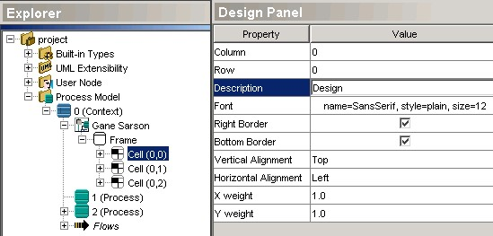

1. In the Explorer, right-click on your Process Model diagram's Frame node (right beneath the diagram node).
2. In the popup menu, select the row or column operation that you want (Insert a row or Insert a column):

Naming cells:
The new cells are displayed in the explorer with their matrix coordonates: (0,0) for the top-left most cell, (0,1) for the cell under (0,0), and so on. Cells can have a description, that we be graphically renderered as a cell title. Cell titles are useful if you want to separate processes in different logical parts.

To
change cell description, select the corresponding cell node in the explorer
(in our case, the top cell is the one having the (0,0) coordonates). Then
using the Design Panel edit the Description property. By default,
cell titles appear in the middle of each cell. To display cell in another
position, such as the left-top, change the Vertical and Horizontal Alignment.
You can have to press the Refresh tool to propagate changes in the
diagram.

Resizing cells:
By defaut, every cell has the same size. There are two ways to resize cells. First, you can select the cell in the explorer and enter new values for the X and Y weight. Each cell having the same Y weight will have the same height and each cell having the same X weight will have the same width. So if you select the (0,2) cell and you assign a Y weight of 2.0, all the heights will be re-computed to allocate 25% of the total height to the two first cells and the remainning 50% to the last cell.
A more intuitive, although less precise way to resize cells is to move the mouse cursor over a cell boundary in the diagram; the mouse cursor then changes its shape to a two-arrow redimension shape. Once the shape changes, press the mouse button to move the cell boundary.

Removing cells:
To remove a cell, locate the corresponding cell in the explorer; select the frame node that contains the cell, right-click the node to get the pop-up menu, and choose Remove a row or Remove a column of cells.